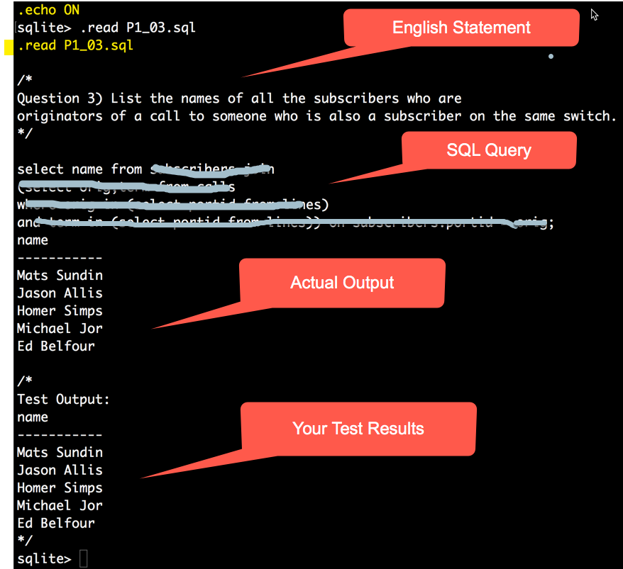
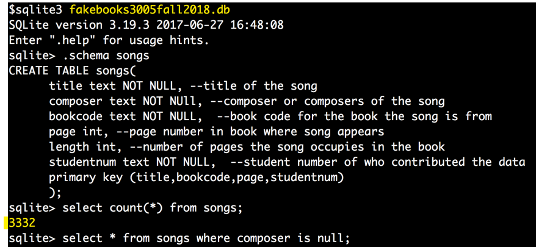
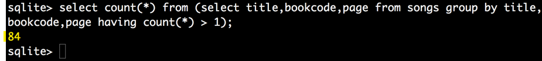
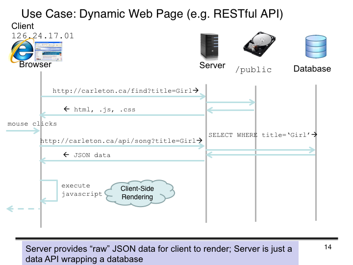

(Marking Instructions in Red)
Total 62 marks
Question 1 (30 marks)
Problems 1.1-1.10: 3 marks each for total
of 30 marks.
Give one mark for English query statement that accompanies the sql, one mark for the correct SQL logic, and 1 mark for correct output table.
For SQL they can either do a single query or could make temporary tables and
break things up into smaller queries. We are not judging performance, just
whether the correct result is produced.
Question 2 (8 Marks) Two marks each for requirements R2.1-R2.4
Question 3 (16 Marks) Two marks each for requirements R3.1-R3.8
Question 4 (8 marks) Two marks each for requirements R4.1-R4.4
Revisions:
Rev 4: (2018 11 09) Added a picture that illustrates the use-case that the demo code for problems 3 and 4 implements.
Rev 3: (2018 11 06) Just a not to tell you NOT to make corrections to the winter 2016 data in problem 2. There might be duplicates in the winter 2016 data but the problem exercise is to join in the fall 2018 data without changing any of the non null values currently in the winter 2016 data.
Rev 2: (2018 11 05) fixed minor typos and an important clarification about the difference between the fakebooks3005fall2018.db database in problem 2 and the version supplied for problems 3 and 4.
Rev 1: (2018 11 02) I've added the results I got for problem 2. These will be the targets you need to hit -assuming I did it right.
In this assignment you will get practice doing sql queries and data manipulation. You will also build an app that supports the data we collected in assignment #1. This assignment does not contain any component related to your term database project but what your learn from building the api based web app will be used in assignment #5 which will be about your project database.
Problem 1 consists of some practice questions relating to the telephone switching database we have examined before. It stores information about subscribers, lines, trunks, calls in progress, services lines subscribe to, routing information used by trunks. This question is intended as practice for the final exam which will have SQL query questions related to this data. You need to answers the query questions using SQL.
Problem 2 is about using SQL to manipulate data, as opposed to querying data.
Problems 3 & 4 consists of providing an RESTful API-based app to access the data you collected about fakebook songs in assignment #1. The app is intended to let casual (non database) users browse the data and make basic corrections to it using the app.
ASSIGNMENT SUBMISSION FORMAT REQUIREMENTS. ONLY ASSIGMENTS THAT ADHERE TO THE SUBMISSION REQUIREMENTS WILL BE GRADED
| Req Type | SUBMISSION REQUIREMENTS |
|---|---|
| ALL | GENERAL Problems that require written answers or diagrams must be submitted as .pdf documents. (DON'T submit .doc word processor or other document formats, .txt, .html, .xml etc. ONLY .pdf) PDF documents must be well organized and not a collection of isolated files or content. Label what answer goes with what problem for example. (For multiple questions involving PDF's you can put everything in one document, or have a separate document for each question -just label the files clearly.) Diagrams must NOT be scans of hand drawn work. They must be created with an approriate diagraming tool. No hand written or hand drawn work will be accepted. .zip is the only compression format accepted. If you compress your entire submission or indivdual parts of it use only .zip format (NOT .rar, or .tar, or .gzip or whatever). Only .zip is accepted. (.zip is the format that culearn uses to compress your submissions when they are delivered to the TA's for grading.) |
Problem 1 |
Submit 10 .sql query files named P1_01.sql ... P1_10.sql (one for each problem P1.1-P.10) that adhere to requirements R1.1, R1.2, R1.3
|
Problem 2 |
Submit a new version of the winter 2016 sqlite database: fakebooks3005winter2016.db
|
Problem 3 Problem 4 |
Submit ONE copy of the code that includes answers for problems 3 and 4 combined. You must supply ALL the files needed for your javascript project including the database it uses. The code should be organized as the demo code is. DO NOT submit the node_modules directory that results when you install npm modules. In other words, delete that directory before you submit your code. The marking TA will run your code by executing npm install //to install the needed npm modules listed in the package.json file node server.js //to start your server and visit http://localhost:3000/index.html from a browser to access your app (unless you provide a different url in a README.txt file. If your code cannot be installed and launched as above the mark for problems 2 and 3 is zero. |
The course notes provides an sqlite database telephone_switch.db that you must use for this question. Here are some more details about this database.
Digit translations during a call works like this. The dialled digits are entered into the call table along with the originator information (portID, channel). Then the dialled digits are used to find the terminator which could be a line, a trunk, or a treatment.
Choosing the terminating facility based on the dialed digits is called translation. It works as follows. The dialled digits in the call table are compared to the directory numbers of the lines. If one matches then that is the line that was called and would be entered as the terminator of the call and the line's state updated from IDLE to BUSY. If the called line however turns out to be BUSY, a busy treatment facility would be used as the terminator instead.
Suppose however a caller dials a number that is not among those of the lines. That means the digits represent a called party attached to another switch and so the call will connect to the appropriate trunk instead of a line. Trunks connect switches to each other and support up to 24 conversations at once. To select the appropriate trunk the trunk_routes table is used and is interpreted as follows.
The preferred trunks to use in a call are those for which the area and office code match those of the dialled digits. Otherwise (less preferred) trunks that match the area code and have 000 for the office code can be used. If there are no matches but a valid phone number was dialled a trunk serving area=000 and office=000 can be used (least preferred option). Several trunks could satisfy any one of the above criteria which would make them an equally preferred choice.
The following problems must all be solved by coming up with the required SQL queries. If necessary you can create temporary tables. In each case show the output of the table that shows the result. In all cases your query should still work if more data is added to the database or some data deleted. That is, don't hard code any data dependent values in the query based on what the tables currently contain.
(For these queries we will assume that an SQL CONTAINS operation is not available -which it is not with SQLite, MySQL and many other relational database products).
For each problem you must provide a query script and sample output: Put your output as a comment at the bottom of the query script so we see it when it runs. Notice you are also asked to provide an english statement of the query with your script. That way when we run your script with .echo ON we see the english statement, the query, your sample output and the actual output. Name your scripts P1_01.sql for question 1 etc. So you will submit 10 individual script files each with the following format:
/* Problem 1.3 List the names of all the subscribers who are originators of a call to someone who is also a subscriber on the same switch (i.e. a line to line call) */ SELECT portid, name from ...; /* Test Output: name ----------- Mats Sundin Jason Allis Homer Simps Michael Jor Ed Belfour */
R1.1 [1 mark] Include an english description of what the query is supposed to find (already done for you, but repeat it with your answer so the TA can see it when they are marking your code) as a comment at the top of your sql query script. [Marking Note: the English provided for the question is OK, they don't have to re-phrase it, just have it in their script so we see it when the script is run]
R1.2 [1 mark] Your SQL query code
R1.3 [1 mark] The anwer table you obtained put as a comment at the bottom of the sql script so we can compare it to answer we get when we run the script.
Submission: submit 10 individual sql scripts called P1_01.sql - P1_10.sql.
When your script for a problem is run it would look something like the following to the marker (needs .echo ON when running in sqlite3 command interface).

Problem 1.1 Produce a table consisting of the names and addresses of the subscribers and their phone numbers.
Problem 1.2 Produce a table that lists all the area code, office code combinations and the number of subscribers with that area code, office code combination.
Problem 1.3 List the names of all the subscribers who are originators of a call to someone who is also a subscriber on the same switch (i.e. a line to line call)
Problem 1.4 Find the names and address of all subscribers who subscribe to all of the available services. (Note the result for the current data might be empty but your query should work if the TA's add more data to the databse.)
Problem 1.5 Find the names of all the subscribers who subscribe to at least three services.
Problem 1.6 Produce a table that lists the most popular service (or services). That is, give the name of the service that has the most subscribers.
Problem 1.7 Write an SQL query that will produce in one table a list of all the acceptable trunks that can be used to route a call to the 416 area code, office code 334. This query should list the trunks in the order of preference. (The answer should list trunks with routes 416,334 then those with 416,000 and then those with 000,000 for example)
Problem 1.8 Write an SQL query that would find if the line with phone number (613) 712-0024 is currently available to take a call (that it is IDLE).
Problem 1.9 Do the same as question 1.7 but this time only include trunks that have at least one 'IDLE' channel. That is, write an SQL query that will produce in one table a list of all the acceptable trunks that can be used to route a call to the 416 area code, office code 334 have at least one idle channel. This query should list the trunks in the order of preference. (The answer should list trunks routes 416,334 then 416,000 then 000,000 for example)
Problem 1.10 Produce a table that lists the name of all the service-subscribers that subscribe to at least all the same services as Jason Allison subscribes to but possibly others as well. Jason Allison rents the line with portID=2.
The previous problem was about querying data with SQL; this problem is about manipulating data with SQL.
In assignment 1 you all contributed sql scripts of fakebook song data. In particular you were asked to contribute composer and length data for songs cataloged in a previous offering of COMP 3005. For this question we want you to merge your composer and length data with the original data collected in the Winter 2016 offering of COMP 3005.
In Winter 2016 students collected data on the songs that appear in various fakebooks. The sqlite database they built is provided here as fakebooks3005winter2016.db. Here is the schema for the songs table from that 2016 database.
CREATE TABLE songs ( id integer primary key not null, title text not null, --title of song composer text, --composer(s) of song bookcode text, --book song is from page integer, --page in book song appears on length integer --length of song in pages );
Although this schema shows a composer and a length column, no composer or song length data was collected -that was to be an exercise for a future 3005 class (you). Their songs table consists of some 4197 songs with no composer or song length data:
Meanwhile our class (Fall 2018) used a text dump of the previous data and you provided scripts that contributed composer and song length data for some of the songs that appear in the books. We have merged together all your individual scripts into a single database: fakebooks3005fall2018.db. The schema for the songs table from this database is:
CREATE TABLE songs(
title text NOT NULL, --title of the song
composer text NOT NUll, --composer or composers of the song
bookcode text NOT NULL, --book code for the book the song is from
page int, --page number in book where song appears
length int, --number of pages the song occupies in the book
studentnum text NOT NULL, --student number of who contributed the data
primary key (title,bookcode,page,studentnum)
);
The fall 2018 database has some 3332 songs in its songs table and all of the rows have non null composer values and should have non null length data as well.

There does however appear to be some duplicate data in the table that would need to be cleaned up (removed) if we are to attempt a successful join of the data two songs tables:

For this problem we want you to use whatever SQL operations you want and put the composer and song length data from the fall2018 database into the songs table of the winter2016 data. That is, update the currently null composer and length data in the winter 2016 songs table with the correct composer and song length data you collected. You can do this however you want and we will discuss possible strategies in class.
For your answer to this problem you need to submit an updated fakebooks3005winter2016.db sqlite database with exactly the songs from the 2016 data but with composer and length data added to it (that comes from the 2018 data). Since there is too much data to inspect the TA's, when marking your assignment, will go by the number of results found with basic queries to determine that your results are right. Queries like:
select count(*) from songs;
select count(*) from songs where composer not null;
select count(*) from songs where length = 2;
select title,composer,bookcode,length from songs where title like '%Girl%Ipanema%';
(We will let you know of others that you need to be aware of.) You are required to insert as much of the composer and length data as you can. That is, insert all composers and song lengths for songs that can be matched in the original winter 2016 database. IMPORTANT: you CANNOT make any corrections to the song titles in either database as that will throw off the counting results we are expecting. Also [Rev 3] don't delete any duplicates from the winter 2016 data. The purpose of this problem is to join the fall 2018 data in with the winter 2016 data without making any changes to the non-null values (non column composer or column length) of the 2016 data. The winter 2016 data problably has some duplicates in it as well be we will only remove duplicates in the fall 2018 data. Otherwise your counting query results will not match the ones we get.
Here are the specific requirements
R 2.1 [2 marks] The new versions of the fakebooks3005winter2016.db songs table should have exactly the same songs as the original and title,bookcode,page data should be unchanged.
R 2.2 [2 marks] All the songs from the fakebooks3005winter2016.db songs table that match a song in the fall 2018 data should have the composer and song length data "transferred" from the 2018 data. (Songs are deemed to match if their title, bookcode, and page number match.)
R 2.3 [2 marks] Composer and song length data should be correctly matched. That is, not have the wrong composer or length data matched with the wrong song.
R 2.4 [2 marks] Your database should have the maximum possible matches without making any corrections to titles in either the original winter 2016 data or your fall 2018 data.
There is no particular right way to do this but here is a basic strategy:
To do this examine the SQL syntax available on the sqlite.org site. Probably the most useful will be command that allow the following:
REV 1: Here are the results I obtained doing this exercise. These will be your target numbers that the marking will be based on (unless I made a mistake):
sqlite> select count(*) from songs; count(*) ---------- 4197 sqlite> select count(*) from songs where composer not null; count(*) ---------- 2880 sqlite> select title, composer from songs where bookcode = 'RBK1-6ed' and title like '%Girl%'; title composer ---------------------- -------------------- Girl From Ipanema, The Antonio Carlos Jobim Most Beautiful Girl In music: Richard Rodge sqlite> select count(*) from songs where bookcode = 'RBK1-6ed' and length > 1; count(*) ---------- 42
In assignment 1 you all contributed an sql script of fakebook songs. We have now merged your scripts into one table and we want to access it from a web page app. We also want non database people (i.e. the music students) to be able to make corrections to the data using your app. We will allow them to edit important fields but not insert new rows of data or delete any rows of data.
Probably the most popular client-server configuration these days is to have a database accessible via an http-based api that returns JSON data and that data is rendered by code running in the client (typically a browser or mobile app). Browsers run javascript code that can add the data obtained from the api to the web page they are displaying.
Here is an interaction diagram showing the basic use-case that the demo code implements:

The demo code provides such an app that accesses the 1200_iRealSongs.db database provided with the app. It lets users search for songs based on a title keyword, shows the song's details and then lets them edit (make corrections to) the data and submit an update to the server. The server in turn modifies the data stored in the database.
You will notice in the demo code when the song details are displayed that the id primary key field is read only. It cannot be modified by the casual user editing the other data -this is intentional.
The demo code also demonstates the use of an http POST message to send JSON data back to the server to be used to modify, or correct, data in the database.
For this assignment we want to provide a user interface where a casual (non database) user can view the data and make corrections to the database.
For this problem we want you to replace the 1200_iRealSongs.db database with the fakebooks3005fall2018.db database that is also included in the data directory of the demo code. That database consists of some 3000 plus songs that you contributed in assignment 1.
REV 2 CLARIFICATION: IMPORTANT: the fakebooks3005fall2018.db that is in the data directory of the sample node.js code for this and the next problem is NOT exactly the same as that from problem 2. In particular, we have made a key switch. The database supplied with this sample code has an id integer primary key whereas the database from problem 2 has a (title,bookcode,page,studentnum) primary key. In other words, for the problem 3 and 4 node.js application we have cleaned up the database and made a new convenience id key instead. This will allow the insert or replace sql command to work against the id primary key when doing an update.
Run and examine the demo code. You need to first install the required npm modules by executing:
npm install
then you run the server by executing:
node server.js
and then access the app from a browser by visiting:
http://localhost:3000/index.html
Once the app is running you can search for songs based on song titles. You can click on one of the found songs hyperlinks which will show a song details area. If there are errors in the song's details you can make corrections and then send an update to the database by clicking the update button. The server will use the information sent to it (as a JSON string) and run an INSERT OR REPLACE sql query against the database to permanently correct the data.
Study the code until you are comfortable with how it works. Notice in particular how an http POST message is used to deliver update data to the server. Modify the code to use the fakebooks3005fall2018.db database and satisfy the following itemized requirements.
R3.1 Your code should provide access to the most recent fakebooks3005fall2018.db database. It is included in the demo code. There is also a backup copy to restore experiments in updating the database.
R3.2 The user should be able to search for songs using the keyword textfield and a Search Songs button. If you enter a keyword in the text field and press the Search Songs button the server should return JSON data about all the songs that have that keyword within either their title or composer. That is, we want to be able to search both the title and composer property with the search.
R3.3 The results of the search should be rendered as a list of hyperlinks that show at least the song's id and title (you can show other details if you want but keep the information on one line in the list.) The search results should include at most 30 entries and this limit should be the results on using the LIMIT clause in the sql search query. The list of search results should be sorted alphabetically based on song title.
R3.4 If the user clicks on one of the songs in the search results list the details of that song should be shown to the user in a dedicated area of the website (as is done in the demo code). The details area should include the following information about the song:
R3.5 The songs details area should show the information in textfields that can be edited (as is done in the demo code). The id field however should be read only as the casual user is not allowed to change that. The user should be able to edit data that appears to be wrong. You may, if you want. (Casual users area allowed to make corrections to the data but not insert rows or delete rows in the database.)
R3.6 If the user has made modifications to the data they should be able to send that to the server by clicking the Update button. This should resuilt in a http POST message being sent to the server using the api/update/song url (as is done in the demo code).
R3.7 When the server receives the update POST request with the data it should run an INSERT OR REPLACE query against the database which should modify the data to that specified in the in client's update request.
R3.8 Once the update has been made, if the client again does a search and display of the song details they should see the modfied data being returned by the api.
Here is a short screen capture video of how things might look after you've completed this problem:
For this problem you can make whatever additions you want to the api supported by the server. That is, you can add more /api/... url's if you want.
Just as there can be error's in the songs data there can also be errors in the bookcodes data and we want casual users to be able to correct that as well. If you examine the fakebooks3005winter2016.db you will notice it has a bookcodes tables that the fakebooks3005fall2018.db database does not. This table provides data about the books that the bookcode in the songs table represent.
For this problem we want you to take the bookcodes table from the 2016 database and add it to the 2018 database using in the previous problem. Then modify the application so that casual users can edit the book data as well. Specifically, repeat the process from the previous problem but now allow the user to search for and correct information in the bookcodes table as well. Modify the code to also satisfy the following requirements.
R4.1 Provide a Search Books button. If the user enters a keyword in the search text field and presses the Search Books button the server should return a JSON object that lists all the books whose bookcode or title contains the keyword. This list of books should be displayed for the client as was done for the songs in the previous problem.
R4.2 The search results should be rendered as a list of hyperlinks that shows the bookcode and title of the found books. The list should be sorted alphabetically by bookcode. The search results should show all the matching books in the database. That is, don't limit the search results to a specific number -we want to be able to see a list of all the books if no search keyword is provided with the search.
R4.3 If the user selects one of the books in the list of search results the details of the selected book should be dislayed in a dedicated area. The details should include the following:
R4.4 The book details should be editable except for the bookcode field which should be read only. If the user edits the details and presses the associated Update button a http POST message should be sent to the server and the data used to update the book information in the database. (The intention is to use this feature to allow casual users to provide the num_pages data which is currently set to 0 as default.
Here is a short screen capture video of how things might look after you've completed problem 3: